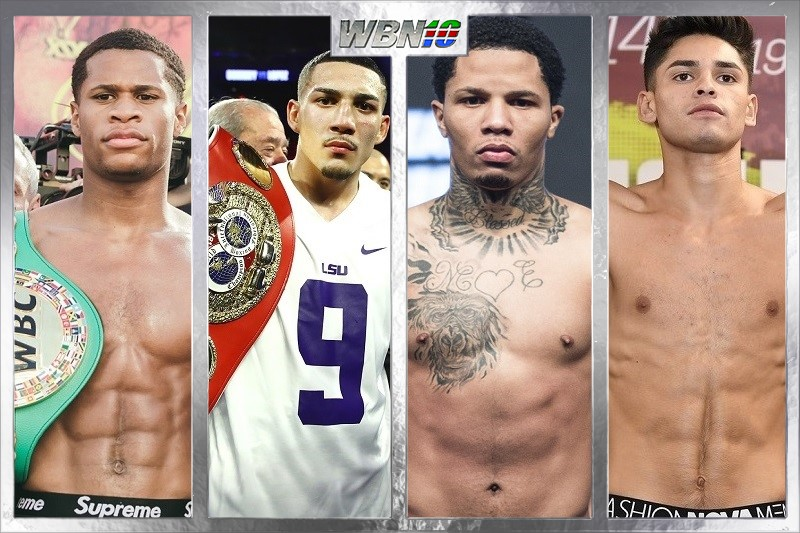

Below we have a breakdown of current fight records in our top fight list. This includes what current titles these fighters hold. This is our top five for August 2021
During fall 2020 we witnessed the highly anticipated unification bout between Vasiliy Lomachenko and Teofimo Lopez. Many of the bookmakers and writers had Loma winning the fight with ease however things didn't play out as expected. The fight went 12 rounds and we saw a new champion in Teofimo Lopez. The new unified champion completely outboxed Loma is superb fashion. To this is how we have Teofimo as our NO 1 ranked lightweight and Loma and second on the list as he is still recovering from injury and hasn't returned to the ring as of yet. We move on the Gervonta Tank Davis, Has the persona of a young Mike Tyson with killer instinct. Tanks record speaks for itself an illustrated record of 25 win and 24 of them coming by way of KO. As Davis moves on with his career eyeing a possible bout with Lopez. This division is bringing back the aura of the middleweights from the 80's. Next we look on to our rank at numbers 4 and 5 we have Devin Haney, Rising superstar and undoubtedly a future champion and internet sensation Ryan Garcia. Both fighters coming off solid wins and this is a box office PPV fight in the future when these two names collide. The two are the youngest of the 5 and have promising futures. Either way with this division, if the promoters can come together and make these fights happen. Boxing fans around the world have some interesting fights to look forward too.
